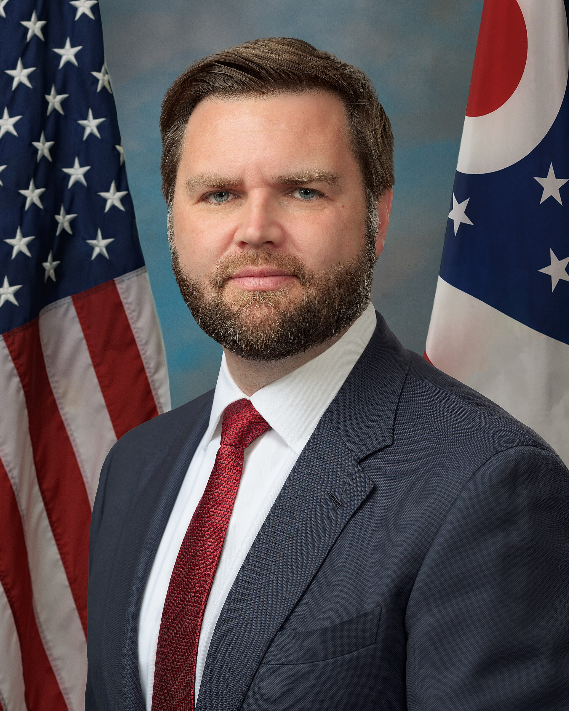

The story so far
The Making of JD Vance
From Middletown and Jackson to the Marine Corps, Yale Law, a bestselling memoir, the Senate, and the vice presidency — and the public record of how he changed his mind about Donald Trump.
Last updated November 25, 2026, 8:15 AM PT. Personal details below are drawn from official biographies and contemporaneous reporting. Every factual claim is linked to a source.

Where It All Started
Vice President JD Vance “was born and raised in Middletown, Ohio,” a manufacturing town whose good jobs, the official White House biography says, disappeared over time, with his family among those who “suffered the effects.” He has described a childhood marked by financial strain, his mother’s struggle with addiction, and his father’s absence. His grandparents — “Mamaw” and “Papaw” — “filled [that void] with unwavering support and guidance.” White House biography
Click to read moreShow less
His family’s roots, and the summers he spent with them, run through Jackson, in eastern Kentucky’s Appalachia, a setting he later placed at the center of his memoir Hillbilly Elegy. In 2016 he told NPR that the book recalled “a childhood where poverty was ‘the family tradition.’” NPR, Aug. 17, 2016
After graduating from Middletown High School, he enlisted in the United States Marine Corps, “serving for four years with a tour in Iraq,” then used the G.I. Bill to attend Ohio State University and later Yale Law School. White House biography
The Road to the Vice Presidency
In 2016 Vance published Hillbilly Elegy: A Memoir of a Family and Culture in Crisis, which became a New York Times bestseller and, in 2020, a feature-film adaptation. The Guardian, July 6, 2021 (noting the prior year’s film adaptation). The official White House biography describes him after law school as “an investor in startups across the Midwest, and as the author of the bestselling memoir.” White House biography
Click to read moreShow less
In 2022 he was elected to the U.S. Senate from Ohio. In 2024, the White House biography says, “President Donald J. Trump extended JD the incredible honor of asking him to serve as the Vice-Presidential Nominee.” He took office as vice president in January 2025.
Usha and the Kids
Vance met his wife, Usha Chilukuri Vance, at Yale Law School. A Voice of America profile reports that she is “the daughter of Indian immigrants”; her parents, Krish and Lakshmi Chilukuri, are from Andhra Pradesh and later settled in San Diego, where she was born. She earned a bachelor’s degree from Yale, a master’s degree from the University of Cambridge, and a law degree from Yale Law, where the two met; they married about a year after graduating in 2013. After law school she clerked for Judge Brett Kavanaugh on the U.S. Court of Appeals for the D.C. Circuit and later for Chief Justice John Roberts. VOA, citing the memoir, notes that Vance called her his “Yale spirit guide” and wrote that he “fell hard” for her. She is, like her parents, a practicing Hindu. VOA, July 17, 2024 Clerkships are also recorded in a U.S. State Department biography. U.S. Mission Montenegro, Jan. 24, 2025
Click to read moreShow less
That January 2025 State Department biography named three children: sons Ewan and Vivek and daughter Mirabel. The current White House biography says the couple are “proud parents to four beautiful children.” White House biography In a statement reported on July 19, 2026, the Vances announced that a son, Alec Neel Vance, “was born this morning” at Walter Reed National Military Medical Center, and that “Usha and the baby are happy and healthy, and our kids are overjoyed to meet their little brother.” Reporting on the statement also gave the earlier children’s years of birth as Ewan, 2017; Vivek, 2020; and Mirabel, 2021. Al Jazeera, July 19, 2026, citing AP and Reuters
A Faith Journey
Vance was baptized and received into the Catholic Church on August 11, 2019, by the Dominican priest Father Henry Stephan at St. Gertrude Priory in Cincinnati. In an interview published the same day he said: “I became persuaded over time that Catholicism was true.” He added that he “was raised Christian, but never had a super-strong attachment to any denomination, and was never baptized,” and that when he became more interested in faith he “started out with a clean slate, and looked at the church that appealed most to me intellectually.” He chose St. Augustine as his patron saint. Rod Dreher, The American Conservative, Aug. 11, 2019
From Critic to Running Mate
Vance’s opposition to Donald Trump in 2016 is a matter of public record — including a widely quoted magazine essay, a television interview, and a private message later published by a former roommate. So are his later explanations, in his own words, of when and why he changed his mind. The quotations below are his, as reported by the cited outlets. They are not paraphrases dressed as quotations.
What he said in 2016
In a July 4, 2016 essay for The Atlantic, “Opioid of the Masses,” Vance wrote of Trump’s campaign: “Trump is cultural heroin. He makes some feel better for a bit. But he cannot fix what ails them, and one day they’ll realize it.” He also wrote, “Trump’s promises are the needle in America’s collective vein.” The Atlantic, July 4, 2016 The wording is also quoted in later roundups. Axios, July 16, 2024
“Trump is cultural heroin. He makes some feel better for a bit. But he cannot fix what ails them, and one day they’ll realize it.” Vance, The Atlantic, July 4, 2016
Click to read moreShow less
In an October 2016 interview with Charlie Rose, Vance said he was “a Never Trump guy” and that he “never liked him.” Axios, July 16, 2024 Politico, July 15, 2024
In February 2016, in a private message to his former Yale roommate Josh McLaurin — later published by McLaurin and widely quoted — Vance wrote that he went “back and forth between thinking Trump is a cynical asshole like Nixon who wouldn’t be that bad (and might even prove useful) or that he’s America’s Hitler.” The Washington Post, July 15, 2024 Politico, July 15, 2024
Deleted 2016 posts later reported by CNN included one calling Trump’s rhetoric toward immigrants and Muslims “reprehensible,” and another saying Vance would vote for the independent candidate Evan McMullin. Axios, July 16, 2024, citing CNN
How he explained the change
By the time he entered the 2022 Senate race, Vance said his view of Trump had changed after watching him in office. In a July 2, 2021 interview with TIME, over breakfast in Cincinnati, he said: “I sort of got Trump’s issues from the beginning. I just thought that this guy was not serious and was not going to be able to really make progress on the issues I cared about.” He added that Trump is “the leader of this movement,” and “if I actually care about these people and the things I say I care about, I need to just suck it up and support him.” Molly Ball, TIME, July 7, 2021 (the diner conversation was on July 2).
“I just thought that this guy was not serious and was not going to be able to really make progress on the issues I cared about.” Vance, interview with TIME, July 2, 2021
Click to read moreShow less
To WCPO, he put the same point in terms of results: “I think he delivered on his promises to make the country a better place. So, I think I saw this guy, he was an outsider. I didn’t really believe he was serious. And then I saw the guy in action. And I thought he was a successful president. That’s why I supported him enthusiastically in 2020. … So I changed because he did a good job.” WCPO
On Fox News in July 2021, after old tweets resurfaced, he said: “Like a lot of people, I criticised Trump back in 2016. And I ask folks not to judge me based on what I said in 2016, because I’ve been very open that I did say those critical things and I regret them, and I regret being wrong about the guy.” He also said Trump was “a good president. I think he made a lot of good decisions for people, and I think he took a lot of flak.” The Guardian, July 6, 2021, quoting Fox News
In his first interview as the 2024 vice-presidential nominee, Axios reported, Vance said he had been “certainly skeptical” of Trump but that the former president “changed my mind,” and: “I actually think it’s a good thing, when you see somebody, you were wrong about them, you ought to admit the mistake and admit that you were wrong.” Axios, July 16, 2024
The Pick

On July 15, 2024, the first day of the Republican National Convention in Milwaukee — and two days after an assassination attempt on Trump at a rally in Butler, Pennsylvania — Trump named Vance as his running mate. On Truth Social he wrote: “After lengthy deliberation and thought, and considering the tremendous talents of many others, I have decided that the person best suited to assume the position of Vice President of the United States is Senator J.D. Vance of the Great State of Ohio.” CNN, July 15, 2024 Reuters, July 15, 2024
Click to read moreShow less
CNN, citing sources familiar with the process, reported that the finalists also included Sen. Marco Rubio of Florida and Gov. Doug Burgum of North Dakota; that Trump formally offered Vance the job by phone about 20 minutes before the Truth Social post; and that the two had met at Mar-a-Lago on Saturday, before the Butler rally. The same report said Vance’s supporters, “including Trump’s son Donald Trump Jr. and conservative media figure Tucker Carlson, had argued that Vance has the strongest relationship with Trump” among the finalists “and would be the most loyal selection.” CNN, July 15, 2024
In on the Joke
The pointing meme
Vance has occasionally leaned into viral internet edits of himself on his personal X account. On March 8, 2025, he posted a face-edited version of the Leonardo DiCaprio pointing meme — a post that drew over 502,000 likes and 154 million views.
Posted by JD Vance (@JDVance) on March 8, 2025. Embedded via official X embed. Original X post · See more official memes
— JD Vance (@JDVance) March 8, 2025